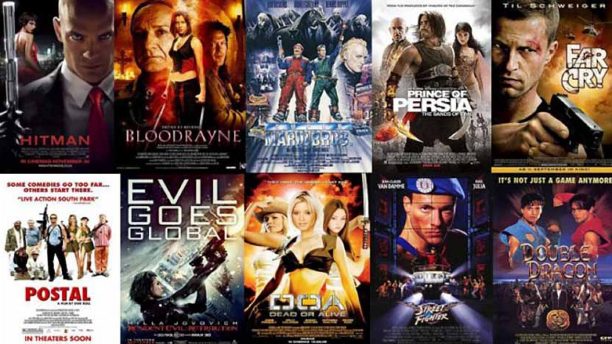

El cine y los vídeojuegos han estado unidos desde el principio de los tiempos como forma de ampliar las historias de las películas y, al mismo tiempo, hacer caja.
Este site vamos a veremos un listado de las mejores vídeojuegos basados en películas obtenido de la referencia Hobbyconsolas.

Y por otra parte las mejores películas sobre vídeojuegos de la referencia Cine en la sombra.
Bandas Sonoras
- 007: Desde Rusia con Amor
- El Señor de los anillos: El retorno del rey
- Harry Potter y la Piedra Filosofal
- King Kong
- LEGO Star Wars: El Despertar de la Fuerza
Siguenos en